Verbatim-nahe Aufzeichnung des aide-knight-Aufbaus pro Phase, als Quelle für die didaktische Destillation in Phase 12 (siehe knight_plan.md).
Vor Phase 0 lag im Verzeichnis eine vollständige, lauffähige Knight's-Tour-Implementierung (8 Dateien, ~890 Zeilen). Diese wurde vor Beginn der didaktischen Übung hart entfernt, damit der Aufbau aus der reinen knight.md-Spezifikation heraus tatsächlich bei Null beginnt.
pre-rebuild-2026-05-13 — der alte Code bleibt im Git-Objekt-Store auffindbar, falls didaktisch später ein Vergleich gewünscht ist.app.js, board.js, solver.js, ui.js, index.html, style.css, knight_plan.md) per git rm. Im Working-Tree blieb nur knight.md.Read, noch per Bash (git show pre-rebuild-2026-05-13:...), noch über andere Werkzeuge. Diese Selbst-Verpflichtung ist Teil der didaktischen Reinheit: würde im Hintergrund "abgeschrieben", verlöre der Lehrwert seine Substanz.aide-knight/knight_plan.md — der ephemere Plan aus ~/.claude/plans/ wäre für die spätere Phase-12-Destillation nicht verlässlich verfügbar; jetzt ist er versioniert im Repo.51ee975 — Phase 0: tabula rasa for didactic rebuild
Q: Welche Farben für das Schachbrett?
A: Klassisches Schach-Schema (chess.com / lichess-Defaults): #f0d9b5 (hell, beige) und #b58863 (dunkel, braun).
Q: Schwarzer Text auf dunklen Feldern — kontraststark genug? Und führt eine Mischung "weiß auf dunkel / schwarz auf hell" zu visueller Unruhe?
A: Ja, Mischung ist unruhig. Empfohlene Lösung: eine Tintenfarbe für alles, dunkelbraun #3a2410 — auf hell hochkontrastiv, auf dunkel noch lesbar. Akzeptiert.
Q: Wo soll die Klick-Koordinate erscheinen, und wie?
A: Status-Zeile unter dem Brett. Format: <col> / <row> (also 4 / 7), sehr schlicht. Menü-Elemente kommen später oben.
Q: Inline (HTML+CSS+JS in einer Datei) oder schon jetzt mehrere Dateien?
A: Empfehlung: drei getrennte Dateien (index.html, style.css, app.js) ab Anfang — der echte Multi-File-Refactor (board.js / solver.js / ui.js) kommt in Phase 11. Akzeptiert.
index.html — Minimalskelett (<div id="board"> + <div id="status">), kein Framework, kein Build-Schritt.style.css — CSS-Variablen für Zellgröße (60px) und Farben, CSS-Grid für das Brett, Hover-Effekt per filter: brightness(1.07). Tintenfarbe als --color-ink.app.js — Build-Loop von row = 7 (oben sichtbar) bis row = 0 (unten), um die Schach-Konvention a1 = (0,0) einzuhalten. Feldfarbe folgt (row + col) % 2 === 0 → dark (macht a1 zu einem dunklen Feld, regelkonform).Doppelklick auf index.html öffnet das Brett im Browser. Klick auf ein Feld zeigt unten <col> / <row>. User-Bestätigung per Screenshot:
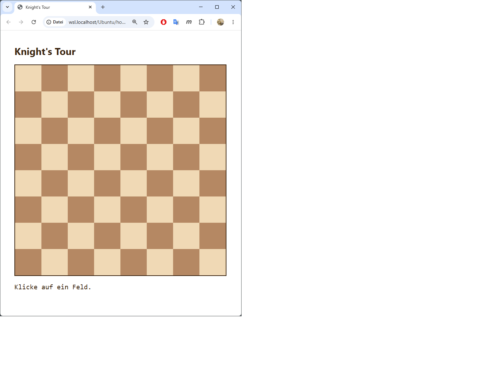
dbe9358 — Phase 1: 8x8 chessboard renders, click reports cell coordinates
Q: Welche Farbe für die Tour-Linie?
A: Kräftiges Rot #c0392b. Kontrastiert gut auf beigem und braunem Feld.
Q: Wo soll der Schritt-Zähler erscheinen, und in welcher Wortwahl?
A: Zweite Status-Zeile unter dem Brett, Wortlaut Lösung nach N Schritten. bzw. Keine Lösung nach N Schritten. — User-Diktion: "Schritte", nicht "Zugversuche" (obwohl knight.md letzteren Begriff verwendet).
Q (vom User mid-phase): Soll das UI komplett auf Englisch sein, mit Vorbereitung für weitere Sprachen?
A: Ja. Eingebaut: STRINGS-Objekt mit Spracheinträgen (en als aktiv, de mitgepflegt) und LANG-Konstante am Kopf von app.js. Neue Sprache hinzufügen = ein weiterer Eintrag im Objekt.
Q (vom User mid-phase): Können die Tour-Nummern nicht oberhalb der roten Linie liegen statt darunter?
A: Ja. Z-Index-Layering: Felder unten, Linie (#overlay) z-index: 1, Nummern (.num) z-index: 2. Stacking-Kontext wird über #board { z-index: 0 } erzwungen, damit die Reihenfolge nicht aus dem äußeren Kontext gestört werden kann.
Q (vom User mid-phase): Sollte ich nicht schon jetzt zwischen DFS und Warnsdorff wählen können?
A: Begriffsklärung erforderlich. DFS ist der Suchalgorithmus, Warnsdorff eine Heuristik innerhalb des DFS für die Reihenfolge der Kandidaten. knight.md (Z. 30) sieht drei Heuristik-Optionen vor (Warnsdorff / Brute Force / Outside-In), alle auf DFS-Basis. Entscheidung: bei Plan bleiben — Heuristik-Auswahl kommt in Phase 4, Phase 2 fährt mit Warnsdorff fest verdrahtet.
visited als Int32Array(W*H) — 0 = unbesucht, sonst Tour-Nummer. Cache-freundlich, vorbereitet für große Bretter.visited und path zurücksetzen.app.js, Multi-File kommt in Phase 11):
#board, viewBox="0 0 8 8" (eine Einheit pro Zelle, automatisch skalierend).<polyline>, stroke="#c0392b", stroke-width="0.08" (≈ 4.8 px bei 60-px-Zellen).y = BOARD_SIZE - 1 - row + 0.5.<div class="num">N</div> in der jeweiligen Zelle, font-size proportional zur Zellgröße (CSS-Variable).STRINGS = { en: {...}, de: {...} }, LANG = 'en', alle UI-Strings über das T-Alias. <html lang>, document.title, h1 und Status-Zeilen werden zur Laufzeit gesetzt.8×8-Klick auf beliebiges Feld liefert in unter 100 ms eine vollständige Tour. Die ersten Sprünge prüfen sich visuell als gültige (±1, ±2)-Bewegungen. UI komplett auf Englisch. Layer-Reihenfolge sichtbar: Linie unter den Nummern.
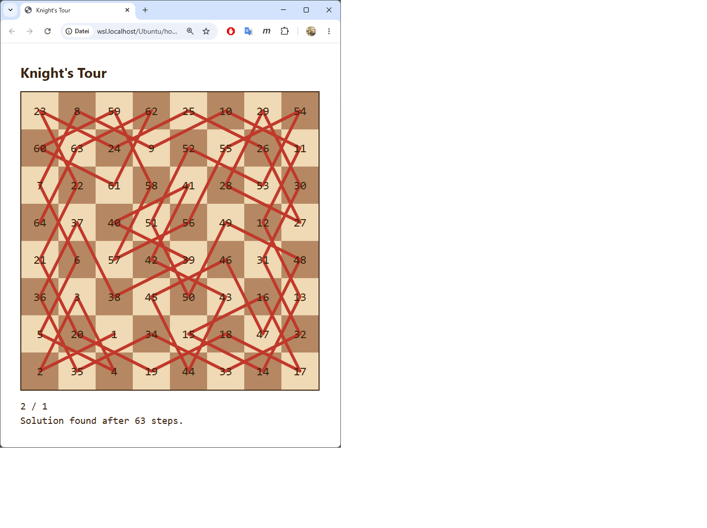
1d9f19c — Phase 2: knight's tour solver core (iterative DFS + Warnsdorff) with line and number render
Q: Wieviel Padding um das Brett (ersetzt den Bounds-Check im Solver)?
A: Dynamisch pro Figur — beim Solver-Start aus der aktiven Move-Liste berechnet: pad = max(|dx|, |dy|). Für den Springer ergibt das 2; für die in knight.md Zeile 33 genannten zukünftigen Figuren (1,4)/(2,3)/(3,4) entsprechend 4, 3, 4. Cleanere Abstraktion als ein hartcodierter Wert; trägt automatisch durch alle späteren Phasen.
Q: Maximale Brettgröße?
A: Kein Cap. Der User darf eintragen, was er will — auch Werte, bei denen der Browser ins Schwitzen kommt. Phase 9 bringt mit dem 5-Sekunden-confirm() einen Abbruch-Mechanismus für lange Läufe.
Q: Wie soll das W/H-Eingabe-UI sich verhalten?
A: Zwei Number-Inputs oben über dem Brett, Auto-Apply auf blur oder Enter. Minimal-UI, kein extra Apply-Button.
buildBoard() ersetzt den früheren Top-Level-Build-Loop. Wird beim Start und bei jeder Dimensionsänderung neu aufgerufen.
cellPx = clamp(2, min(viewport / W, viewport / H), 60) — passt sich an die Viewport-Größe an, damit auch 200×100 ohne Scrollen sichtbar bleibt.boardEl.style gesetzt — repeat(var(--...), ...) wäre eleganter, aber Browser-Support für var() als Repeat-Count ist uneinheitlich.visited ist jetzt Int32Array((W+2·pad) · (H+2·pad)). Padding-Felder werden vor dem DFS auf -1 gesetzt; die Kandidaten-Schleife schaut nur noch auf visited === 0 und fängt damit gleichzeitig Out-of-Bounds und bereits besuchte Felder ab — eine Verzweigung pro Move-Test weniger.BOARD_SIZE ist weg. W, H, cellByIdx, overlay sind nun let-Variablen auf Modul-Ebene, von buildBoard() neu gesetzt. Multi-File-OO-Refactor kommt erst in Phase 11 — bewusst nicht jetzt.| Brett | Startfeld | Schritte | Zeit |
|---|---|---|---|
| 8×8 | (0,0) | 63 | 2 ms |
| 8×8 | (3,3) | 63 | 10 ms |
| 5×5 | (0,0) dunkel | 24 | 1 ms |
| 5×5 | (2,2) dunkel | 24 | 0 ms |
| 100×200 | (0,0) | 19 999 | 101 ms |
| 100×200 | (50,100) | 19 999 | 53 ms |
100×200 löst weit unter der "einstellige Sekunden"-Akzeptanzschwelle.
1) 200×100 — der erwartete Stresstest.
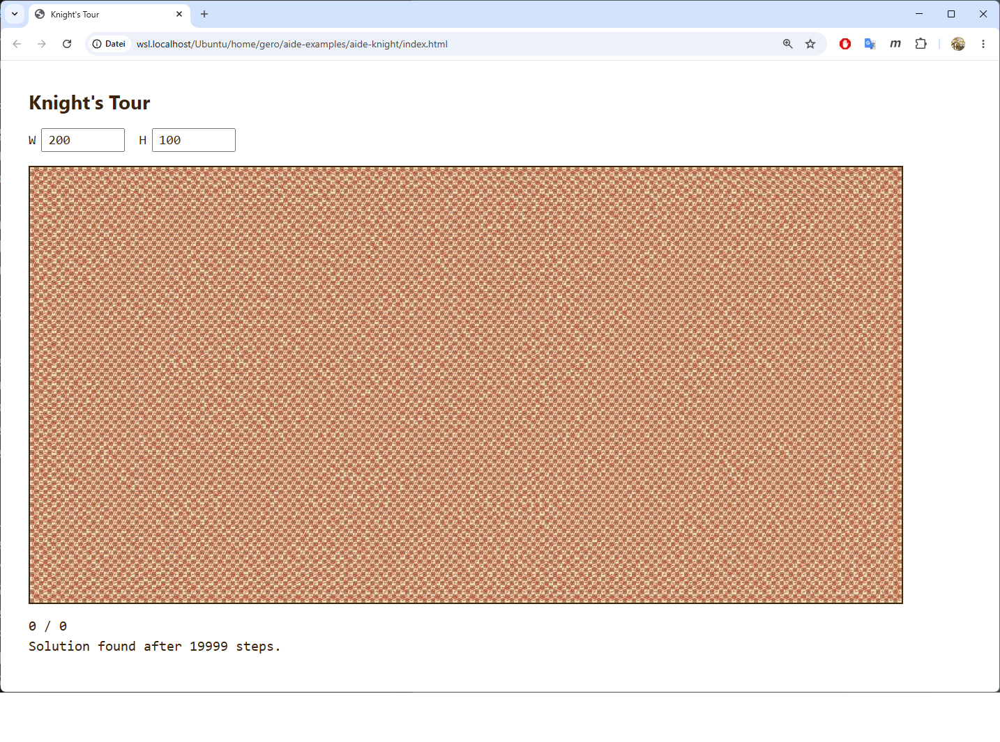
Solution found after 19999 steps. Das sind W·H − 1 Schritte und 0 Backtracks — Warnsdorff "läuft hier durch", ohne ein einziges Mal in eine Sackgasse zu geraten. Die roten Tour-Linien überlagern sich so dicht, dass kaum ein einzelner Sprung sichtbar bleibt — das Brett wirkt fast einfarbig. Für große, breite Bretter ist Warnsdorff praktisch perfekt.
2) 8×4 — der überraschende Pathologie-Fall.
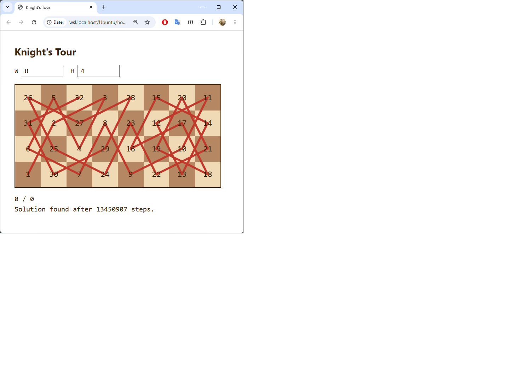
Solution found after 13450907 steps. Bei nur 32 Feldern. Das DFS hat 13.45 Millionen Versuche gebraucht — davon ≈ 6.7 Millionen Backtracks (jeder Backtrack zählt als 1, jeder Vorwärtszug als 1).
Warum? Reine Warnsdorff-Heuristik ist auf schmalen Rechteck-Brettern bekannt-unzuverlässig. Bei Gleichstand des Onward-Count entscheidet die Move-Definitionsreihenfolge willkürlich, und auf 8×4 führt diese willkürliche Wahl die Suche in eine Sackgassen-Region — DFS rettet das Ergebnis am Ende, aber mühsam.
Standard-Fix in der Literatur (Pohl 1967, später Roth, Squirrel/Cull): Tie-Breaker-Regel bei gleichem Onward-Count, z. B. das Feld bevorzugen, das näher an einer Brett-Ecke liegt. Das ist hier nicht eingebaut und gehört auch nicht in Phase 3. Phase 4 wird zusätzliche Heuristiken (Outside-In, Brute Force) und einen Mix-Button bringen — ggf. wäre danach der richtige Zeitpunkt für einen Warnsdorff-Tie-Breaker als bewusste Phase.
3) 5×5 — die Paritäts-Beobachtung des Users.
Auf 5×5 existiert eine offene Springertour nur, wenn das Startfeld dunkel ist. Reine Färbungs-Mathematik:
(row+col)%2===0) und 12 hell.Start-Farbe, andere, Start-Farbe, … = 13 × Start-Farbe + 12 × andere.Damit hat das 5×5 verweigert sinnvoll-Akzeptanzkriterium aus dem Master-Plan ein konkretes, mathematisch sauberes Beispiel: Klick auf z. B. (0,1) (hell) liefert eine echte "No solution found"-Antwort. Schöne Mini-Anekdote für Phase 12.
fe74bf2 — Phase 3: variable W*H boards, padded solver, dynamic cell size
User-Hinweis direkt nach Phase-3-Akzeptanz:
"Das Board muss auf einen window resize event reagieren und sich anpassen, auch wenn keine zusätzliche User-Interaktion erfolgt. Wenn wir auf einem Android-Device sind und das Gerät von Portrait nach Landscape drehen, muss es auch klappen … ist da meine Erwartung zu hoch?"
Technische Korrektur: applyCellSize() ist als Pure-CSS-Resize-Pfad aus buildBoard() herausgezogen — verändert nur --board-cell und die inline Grid-Geometrie auf boardEl.style, keine DOM-Rekonstruktion. Resize-Listener auf window mit Trailing-Edge-Debounce (80 ms). Die gerenderte Tour bleibt erhalten: SVG-Overlay skaliert über seine viewBox, Schriftgrößen folgen der CSS-Variable.
Meta-Erkenntnis (wichtiger als die Code-Korrektur): Die Erwartung des Users war nicht zu hoch. Resize-Reaktion gehört bei einer Webapp, deren ganzer Sinn aus der visuellen Darstellung kommt, zum Baseline-Verhalten — wie Hover-States, sensible Defaults, Keyboard-Bedienbarkeit. YAGNI-Disziplin gegen Featuritis darf das nicht aushebeln; "der Plan erwähnt es nicht" ist kein Argument, sondern eine Lücke im Plan.
Diese Erkenntnis ist als neue Sektion "Baseline-Verhalten ist kein Feature" in ~/.claude/CLAUDE.md verankert, damit sie auch zukünftige Projekte prägt. Konkretes Anti-Pattern, das ich hier zeige: Plan-Wortlaut zu eng auslegen ("dynamische Canvas-Größe" auf "passt sich an W/H an" reduzieren, statt auch "passt sich an Viewport-Änderungen an" mitzudenken).
Sehr relevanter Punkt für die Phase-12-Lehrunterlage unter "Was Profis anders machen" — gerade weil hier der User den Profistandard setzt und die AI das nachholt.
94e018d — Phase 3 follow-up: window resize listener, preserves rendered tour
Q: Wo sollen die drei neuen Controls (Heuristik-Dropdown, Figur-Dropdown, Mix-Button) sitzen?
A: Eigene Reihe unter W/H. Klar gegliedert, keine Platzprobleme auf schmalen Screens (mit flex-wrap).
Q: Was passiert beim Klick auf den Mix-Button? A: Reihenfolge neu permutiert + automatisch erneuter Solve vom letzten Startfeld. User sieht den Effekt sofort. Falls noch kein Startfeld geklickt wurde: nur würfeln, kein Solve.
Q: Was soll über Reloads hinweg in localStorage überleben? A: Vollständiger State — W, H, Heuristik, Figur und Mix-Order. Beim Reload Settings wiederhergestellt; Tour selbst wird nicht persistiert (nur Konfiguration).
Q (vom User mid-phase): Beim Klick auf ein Feld erscheint die Koordinate nicht sofort in der Fußleiste — als visuelle Rückmeldung wäre das aber nötig, bevor die Suche beginnt.
A: Bug bestätigt. Ursache: JS ist single-threaded — der Click-Handler setzt statusEl.textContent = "X / Y", ruft dann aber synchron solve() auf, das den Main-Thread blockiert; der Browser kommt vor dem Block nicht zum Repaint. Bei 8×8 Knight (1 ms) sieht man's nicht, bei längeren Suchen schon. Fix: Double-requestAnimationFrame zwischen Statusupdate und solve(). Eine einzelne rAF läuft vor dem nächsten Paint; zwei rAFs hintereinander garantieren, dass der Browser dazwischen einen Paint einlegt. setTimeout(fn,0) würde es auch tun, ist aber per globaler CLAUDE.md-Regel verpönt — requestAnimationFrame ist der saubere Weg.
Q (vom User mid-phase): In der Spec gibt es das Feature, dass Re-Klick auf dasselbe Startfeld die Suche von der aktuellen Lösung aus fortsetzt. Gehört das zu dieser Phase? A: Nein — gehört zu Phase 9 zusammen mit dem 5-Sekunden-Confirm-Dialog. Begründung: die "Continue from current solution"-Logik braucht eine speicherbare Search-State-Struktur (Stack + visited), die in Phase 9 sowieso aufgebaut werden muss, damit der Cancel-Dialog dazwischenfunken kann.
'warnsdorff', 'outsideIn', 'bruteForce'), zentral in pickCandidates() ausgewertet:
"a,b"-Keys ('1,2' Knight, '1,4' Camel, '2,3' Zebra, '3,4' Giraffe). generateBaseMoves(figureKey) erzeugt acht Move-Vektoren als sign+swap-Permutationen von (a, b).mixBtn.title zeigt die aktuelle Reihenfolge als (dx,dy)-Paare. Auto-Resolve vom letzten Startfeld via resolveLast().let-Variablen für W, H, heuristic, figure, activeMoves. saveState() schreibt nach jedem Setting-Change. loadState() validiert beim Reload (isValidMoveOrder prüft, dass die gespeicherte Order eine Permutation der Basis-Moves ist) und fällt sonst auf Defaults zurück. Storage-Key: aide-knight-state-v1 — das v1 lässt Schema-Migrationen später zu.heuristicLabel, figureLabel, mixBtn (für en und de).| Config | Schritte | Zeit | Bemerkung |
|---|---|---|---|
| 8×8 (1,2) Warnsdorff | 63 | 1 ms | Sauber durch (Regression-Check) |
| 8×8 (1,2) Outside-In | 113 | 1 ms | ~50 Backtracks, andere Geometrie |
| 8×8 (1,2) Brute Force | 16 501 401 | 1 028 ms | Bekannte Schwere |
| 8×8 (1,4) Camel Warnsdorff | >50 M | abgebrochen | Vermutlich keine Hamilton-Tour |
| 8×8 (1,4) Camel Outside-In | >50 M | abgebrochen | Dito |
| 8×8 (2,3) Zebra Warnsdorff | >50 M | abgebrochen | Dito |
| 8×8 (3,4) Giraffe Warnsdorff | 3 420 213 | 303 ms | Sauber "no solution" |
| 10×10 (1,2) Warnsdorff | 99 | 0 ms | Sauber |
| 10×10 (1,2) Outside-In | 13 973 | 1 ms | Outside-In braucht hier deutlich mehr Backtracking |
Bemerkenswert: Outside-In auf 10×10 produziert 13 973 Schritte vs. 99 für Warnsdorff — dramatischer Heuristik-Unterschied. Und die größeren Figuren (Camel, Zebra) haben auf 8×8 vermutlich gar keine Hamilton-Tour; die Giraffe beweist's binnen 300 ms.
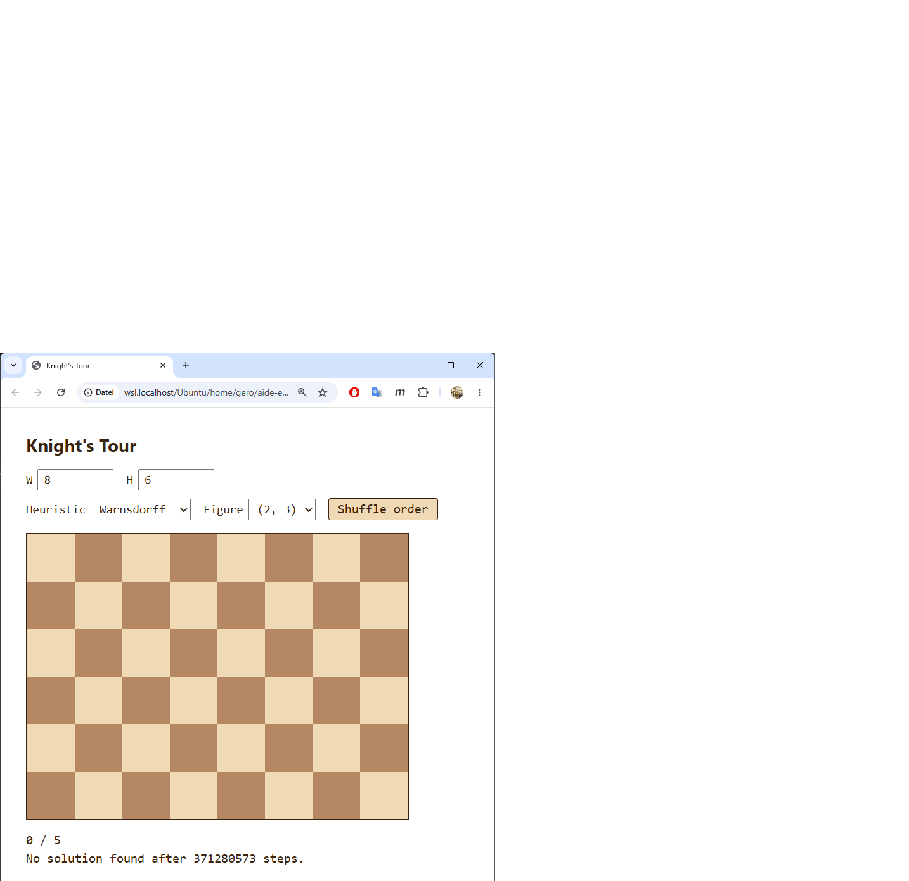
User hat den schwersten denkbaren Fall ausgewählt: 8×6 Brett, Figur (2,3) Zebra, Heuristik Warnsdorff, Startfeld (0,5). Ergebnis nach ≈70 Sekunden Browser-Pause: No solution found after 371280573 steps. — der Solver hat den kompletten Suchbaum erschöpft und damit bewiesen, dass auf 8×6 keine offene Zebra-Tour von (0,5) existiert. Genau das gewünschte Verhalten: keine willkürliche Abbruchgrenze, sondern echtes Erschöpfen des Suchraums. Phase 9 wird mit dem 5-Sekunden-Confirm-Dialog die Geduldsanforderung an den User entschärfen.
Bestätigt funktionierende Features:
pad=3 gerechnet)bec8718 — Phase 4: heuristic + figure + mix-button + full-state localStorage
Q: Wo sollen die beiden Checkboxen sitzen? A: Eigene dritte Reihe — Reihe 1 W/H, Reihe 2 Heuristik/Figur/Mix, Reihe 3 Numbers/Lines. Klar gegliedert.
Q: Sollen Nummern automatisch unsichtbar werden, wenn die Schrift sowieso unlesbar wäre? A: Ja, dynamisch nach Lesbarkeit — Schwelle bei Font ≥ 9 px (entspricht Zellgröße ≥ 28 px, weil Font = 0.32 · Zellgröße). Die Checkbox bleibt aktiv, nur der Render wird unterdrückt.
--num-display und --overlay-display steuern display: der entsprechenden Elemente. Flippen einer Checkbox schreibt nur die CSS-Variable um — kein DOM-Eingriff, gerenderte Tour bleibt unangetastet.applyVisibility() — wird aus applyCellSize() mitaufgerufen, damit beim Resize die Schwelle automatisch nachgezogen wird:const numbersUsable = showNumbers && (currentCellPx * 0.32) >= NUM_FONT_MIN_PX;
showNumbers und showLines werden mit dem übrigen State in localStorage gespeichert.numbersLabel, linesLabel), in en und de mitgepflegt.Test 1 — Lines-only auf 7×7 Knight (Warnsdorff):
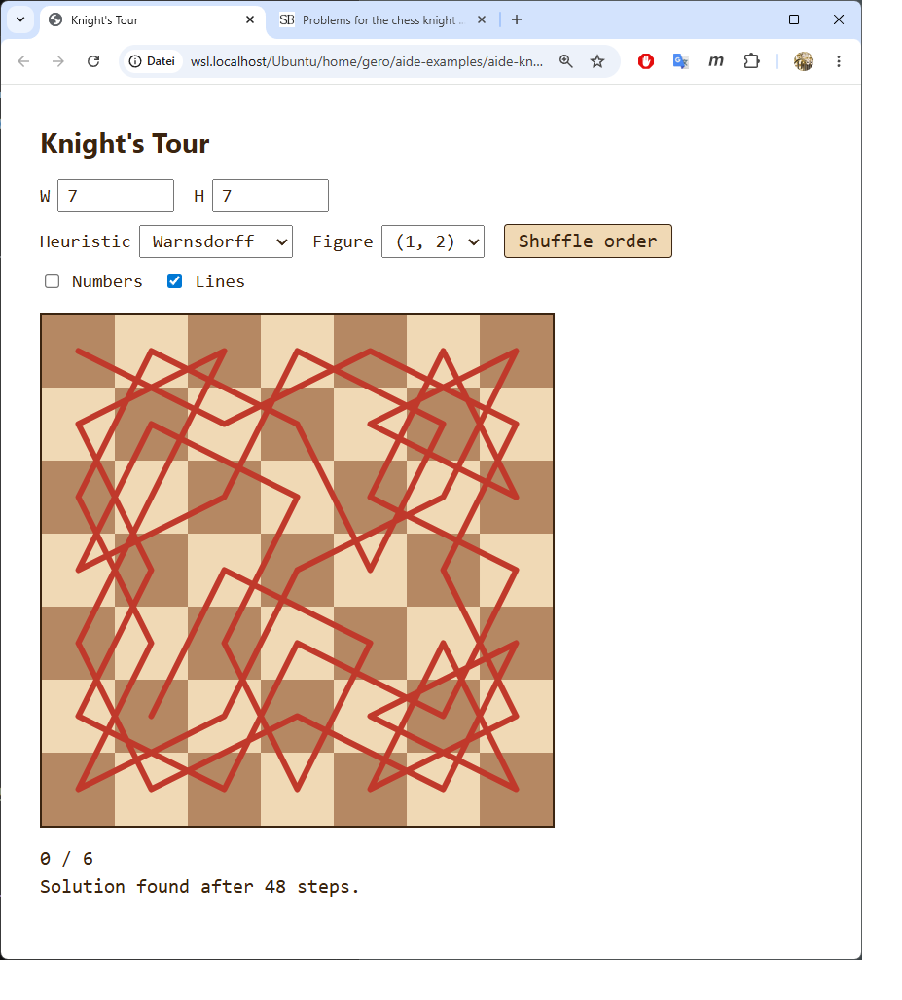
Bei deaktivierter "Numbers"-Checkbox erscheint die Tour ausschließlich als rote Liniengeometrie. Lehrreich für die visuelle Symmetriebetrachtung: jeder Schnittpunkt erzählt etwas über die Springer-Bewegungsstruktur.
Test 2 — Numbers-only auf 40×25 Knight (Warnsdorff):
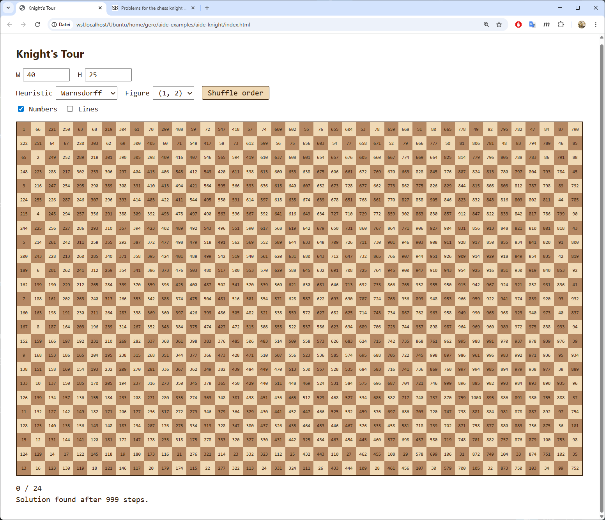
Brett knapp am Render-Limit: 40 × 25 = 1000 Felder, Zellgröße ≈ 30 px (begrenzt durch Viewport-Höhe), Font ≈ 9.6 px — gerade noch über der 9-px-Schwelle, Nummern werden also gerendert und sind klein-aber-lesbar. Würde der User auf 41×25 erhöhen, fiele die Schrift unter 9 px und die Nummern würden auto-hidden, ohne dass er die Checkbox ändert. Sauberes Beispiel für die dynamische Schwelle.
Zugzähler 999 von 1000 — Warnsdorff durch, 0 Backtracks.
72f15cd — Phase 5: visibility toggles for numbers and tour line
Q: Wo soll die "Closed"-Checkbox sitzen? A: An Reihe 3 angehängt — neben Numbers und Lines.
Q: Wie soll die Schließungslinie sich von der normalen Tour-Linie unterscheiden? A: Gestrichelt, gleiche Farbe (rot). Klares Signal "gleicher Tour-Bestandteil, sondiert die Schließung".
Q (vom User mid-phase, kurz nach Start der Implementierung): Noch eine Idee für die geschlossene Tour: wenn man im Startfeld beginnt, dann müsste das andere Feld, von dem aus das Startfeld erreichbar ist, so lange wie möglich nicht benutzt werden. Künstlich verschlechterte "hohe Freiheitsgrade"-Zahl, oder algorithmisches Aussparen bis zum vorletzten Zug.
A: Das ist exakt die klassische Schwenk-Technik in praktischer Form — und didaktisch der wertvollste Moment der bisherigen Übung. Statt des in knight.md Zeile 21 skizzierten Beide-Enden-Verfahrens (alternating ends) liefert die Bias-Idee dasselbe Ziel mit dramatisch weniger Code:
Vorteile gegenüber Alternating-Ends:
Für Brute Force greift der Bias nicht (kein Scoring) — der Solver verlässt sich dort allein auf das Schließungs-Backtracking, ist also langsam wie offene Brute-Force, aber korrekt.
Das ist ein lehrreicher Moment für Phase 12: der User hat den Algorithmus verbessert. Nicht der AI-Assistent. Das Beide-Enden-Verfahren war ein plausibler, aber unnötig schwerer Vorschlag in der Spec; im Live-Dialog kam der User auf die elegantere Variante und hat damit auch demonstriert, dass die in knight.md notierten Ideen nicht heilig sind.
wantClosed: boolean, persistiert in localStorage.solve(startCol, startRow, closed) — der closed-Parameter aktiviert die Bias-Logik.
startNbrs: Uint8Array markiert Startnachbar-Felder vor dem DFS.pickCandidates addiert CLOSURE_PENALTY = 1000 auf Startnachbar-Scores (für Warnsdorff und Outside-In; für Brute Force kein Bias).path.length === total: Wenn closed, zusätzlich prüfen ob startNbrs[at(last)]; nur dann Erfolg. Sonst fällt der Loop durch zum normalen Backtrack-Pfad (top frame ist leer, weil alle Felder besucht).renderTour(path, isClosed) — bei isClosed zusätzlich ein <line> von path[N-1] zu path[0] als Dashed-Stroke (stroke-dasharray='0.18 0.12'). Liegt im selben #overlay, wird also vom Lines-Checkbox-Toggle automatisch mitversteckt.closedLabel (en: "Closed", de: "Geschlossen").| Konfig | Schritte | Zeit | Bemerkung |
|---|---|---|---|
| 8×8 Knight (0,0) Warnsdorff CLOSED | 85 | 1 ms | 22 Backtracks — Bias greift, geschlossene Tour |
| 8×8 Knight (3,3) Warnsdorff CLOSED | 63 | 8 ms | 0 Backtracks — gerader Lauf direkt zur geschlossenen Tour |
| 6×6 Knight (0,0) Warnsdorff CLOSED | 35 | 0 ms | 0 Backtracks |
| 10×10 Knight (0,0) Warnsdorff CLOSED | 99 | 0 ms | 0 Backtracks |
| 5×5 Knight (0,0) Warnsdorff CLOSED | 3 470 157 | 425 ms | Beweist exhaustiv: keine geschlossene Tour |
| 5×5 Knight (2,2) Warnsdorff CLOSED | 1 283 153 | 146 ms | Dito, vom Zentrum |
| 8×8 Knight (0,0) Outside-In CLOSED | 77 | 1 ms | Auch mit anderer Heuristik effektiv |
| 8×8 Knight (0,0) Warnsdorff OPEN | 63 | 0 ms | Regression-Check: Open-Mode unverändert |
Der Bias kostet auf lösbaren Konfigurationen typischerweise 10-40 % zusätzliche Schritte gegenüber Open-Mode. Auf nicht-lösbaren beweist die Suche die Nicht-Existenz in unter einer Sekunde (5×5).
Mathematischer Hintergrund 5×5 nicht-geschlossen: Auf 5×5 hat das Brett 13 dunkle + 12 helle Felder. Eine geschlossene Tour müsste Länge 25 sein, dabei abwechselnd Farben besuchen, und zum Startfeld zurückkehren. Aus dem Startfeld der Farbe X folgt: 13 × X + 12 × ¬X, der letzte Zug (Zug Nr. 25, Farbe X) müsste sich aber mit dem ersten Zug (Farbe X) per Springerzug verbinden — Springerzug wechselt aber die Farbe. Widerspruch. Keine 5×5-Tour ist geschlossen.
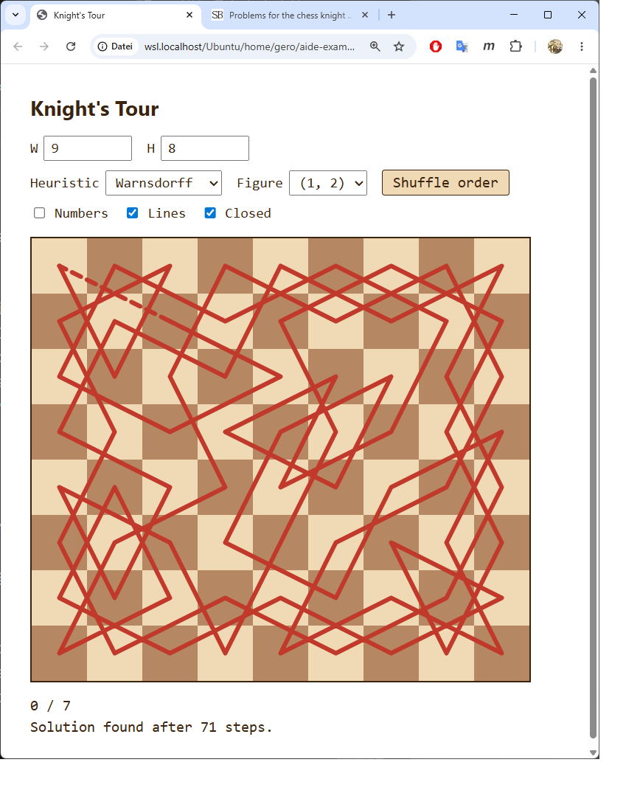
Test: 9×8 Brett, Knight, Warnsdorff, Closed-Modus, Start (0,7). Lines an, Numbers aus (Geometrie-Sicht). Solver liefert in 71 Schritten eine geschlossene Tour über alle 72 Felder. Die gestrichelte rote Schließungslinie ist oben links sichtbar — verbindet das letzte Tour-Feld mit dem Startfeld.
Bestätigt funktionierende Features:
#overlay)8025365 — Phase 6: closed-tour mode via start-neighbour bias (Schwenk technique)
knight.md Zeile 24 fordert nur Rotationssymmetrie. Der Master-Plan-Eintrag generalisiert auf axisV + point + rot90 — das geht über knight.md hinaus. Nach Rückfrage opt-in-Entscheidung: alle drei Typen mitnehmen.
Q: Wo soll die Symmetrie-Kontrolle sitzen? A: An Reihe 3 anhängen (neben Numbers/Lines/Closed).
Q: Was tun, wenn das Brett zur gewählten Symmetrie nicht passt? A: Checkbox-Optionen einzeln auto-disablen. Klare UI-Semantik, keine versteckten Fallbacks.
Statt eine Tour zu suchen und nachträglich auf Symmetrie zu prüfen, baut der Solver eine Quarter-Path der Länge q = total / orbitSize (2 für axisV/point, 4 für rot90) auf. Beim Platzieren einer Quarter-Zelle werden die Orbit-Mates implizit mitbesucht. Die volle Tour wird beim Rendern aus dem Quarter durch wiederholte Anwendung der Symmetrie-Transformation erzeugt:
axisV/point: full = quarter ++ transform(quarter)
rot90: full = quarter ++ rot90(quarter) ++ rot180(quarter) ++ rot270(quarter)
Bridge-Constraint: Der Übergang vom Ende des Quarter zum Anfang des nächsten Quarter im vollen Tour muss ein gültiger Figurenzug sein. Konkret: path[q-1] muss ein Springer-Nachbar von symTransform(path[0]) sein. Das ist die einzige zu prüfende Bridge — alle weiteren Quarter-Übergänge folgen aus Rotations-/Spiegelungs-Invarianz der Move-Menge.
Closure-Bias erweitert: Die Phase-6-Bias-Technik aus Schwenk's Toolkit muss angepasst werden. Naive Übertragung — "Knight-Neighbors von Bridge mit Penalty" — funktioniert nicht, weil das Platzieren einer Zelle (c,r) über die Orbit-Symmetrie auch transform(c,r) belegt. Wenn transform(c,r) ein Bridge-Neighbor ist, wäre dieser Closure-Kandidat damit unwiederbringlich verbraucht. Fix: Die Bias-Menge umfasst Bridge-Neighbors und ihre Orbit-Mates. Der Check bei path.length === q bleibt auf die Original-Bridge-Neighbors beschränkt (nur ein expliziter Closure-Treffer zählt).
Beim Implementieren stellte sich heraus, dass die Shift-by-Quarter-Struktur nicht für alle Brett-Konfigurationen Lösungen findet — selbst dort, wo Touren der genannten Symmetrie nachweislich existieren. Grund: der Bridge-Zug muss farbflippend sein (Springer-Eigenschaft), die Farbe von path[q-1] aber alterniert sich aus path[0].color plus q-1 Schritten, während die Farbe von symTransform(path[0]) von der Transformation selbst abhängt:
| Symmetrie | Farb-Effekt der Transformation | Bridge funktioniert wenn |
|---|---|---|
| axisV (W gerade) | flippt Farbe | q ungerade → W·H ≡ 2 mod 4 |
| point (beide gerade) | erhält Farbe | q gerade → immer (W·H ≡ 0 mod 4 garantiert) |
| point (gemischte Parität) | flippt Farbe | q ungerade → empirisch unzureichend |
| rot90 (N gerade) | flippt Farbe | q ungerade → N ≡ 2 mod 4 |
Aus dieser Analyse folgen die strikteren Validitäts-Regeln in isSymTypeValid():
W % 2 === 0 && (W*H) % 4 === 2 — funktioniert auf 6×3, 6×5, 6×7, 10×3, 10×5, 10×7, ... Nicht auf 8×8.W % 2 === 0 && H % 2 === 0 — funktioniert auf 6×6, 8×8, 10×10, 6×4, 10×6, ...W === H && W % 2 === 0 && (W*W) % 8 === 4 — funktioniert auf 6×6, 10×10, 14×14, ... Nicht auf 8×8.Wichtige didaktische Anmerkung: Diese Einschränkungen sind eine Eigenschaft des Algorithmus, nicht eine mathematische Unmöglichkeit. Tatsächlich existieren rot90-symmetrische Touren auch auf 8×8 — sie haben aber eine andere Pfad-Struktur (nicht shift-by-quarter), die ein verfeinerter Solver bräuchte. Das ist genau der Trade-off von Phase 7: knappe, lokale Algorithmus-Erweiterung deckt einen interessanten Teilraum ab; vollständige Symmetriesuche bräuchte einen größeren Refactor (Post-Symmetrie-Check + andere Pfad-Struktur).
| Konfig | Schritte | Zeit | Bemerkung |
|---|---|---|---|
| 8×8 Knight POINT (0,0) | 31 | 1 ms | Sauber durch |
| 8×8 Knight POINT (3,3) | 45 | 1 ms | Auch von Zentrum |
| 6×6 Knight ROT90 (0,0) | 18 | 0 ms | 0 Backtracks |
| 10×10 Knight ROT90 (0,0) | 680 | 0 ms | Bias greift effektiv |
| 6×5 Knight AXIS-V (0,0) | 40 | 0 ms | Korrekt findet axis-symm. Tour |
| 10×5 Knight AXIS-V (0,0) | 2 646 | 0 ms | Bias greift |
| 8×8 Knight ROT90 | exhausted nach 1.2 M Schritten | 263 ms | Beweist: kein rot90-Tour mit shift-by-quarter-Struktur auf 8×8 |
Bemerkenswert: das ursprünglich verwendete Bias-Schema (nur Bridge-Neighbors, ohne Orbit-Erweiterung) ließ AxisV auf 8×8 50 M Schritte erfolglos laufen. Erst der erweiterte Bias (Orbit-Mates von Bridge-Neighbors gleichmit-penalisiert) öffnete die anderen Konfigurationen — und führte gleichzeitig zur Erkenntnis, dass 8×8-AxisV strukturell ausgeschlossen ist.
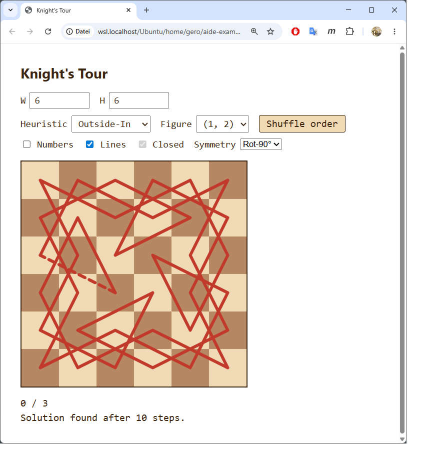
Test-Konfiguration: 6×6 Brett, Knight (1,2), Heuristik Outside-In(!), Symmetrie Rot-90°, Start (0,3). Lines an, Numbers aus (Geometrie-Sicht). Solver liefert in 10 Schritten eine 4-fach rotationssymmetrische geschlossene Tour über alle 36 Felder. Die 4-fache Rotationssymmetrie ist visuell sofort lesbar — die Tour zeichnet eine Windrad-artige geometrische Figur. Die gestrichelte Schließungslinie unten links sichtbar.
Closed-Checkbox erscheint korrekt disabled+checked (grauer Rahmen mit Häkchen) — Symmetrie impliziert Closure, UI signalisiert das ohne den User zu verwirren.
Phase-7-Akzeptanzkriterien aus Master-Plan:
5a17443 — Phase 7: symmetric tours (axisV / point / rot90) via orbit-aware DFS
Während Phase 7 (Symmetrien) noch lief und die siebte Phase ohne grobe Probleme durchgezogen wurde, kam der wichtigste Augenblick der ganzen Übung in einem User-Halbsatz:
"Wir kommen fachlich gut voran. Trotzdem hab ich Sorgenfalten im GEsicht. Ahnst du warum?"
Mehrere Vermutungen wurden nacheinander gesammelt (didaktische Tiefe vs. Mischpublikum-Niveau; Code-Aufblähung; knight.md-Vorgriff in Phase 7; Zeitbudget) — alle vertretbar, keine richtig. Erst auf Userseite kam das Stichwort:
"Ich helf dir mit einem Stichwort: NFR"
Und dann die volle Diagnose, die der Master-Plan und ich konsequent übersehen hatten:
"Unser gesamtes Vorgehen hat einen Designmangel. Wir hätten von Anfang an einen T-Contract (Technical Platform, NFRs) haben sollen und parallel dazu den F-Contract mit der Funktionalität. Ein guter T-Contract hätte replay-fähige Tests gefordert und du hättest daraufhin automatisch (hoffe ich) URL-Args eingeführt, über die zusammen mit CURL eine Automatisierung möglich ist. Wir hätten von Anfang an die i18n-Frage geklärt und Device-Rotation-Fragen und andere Ergonomie-Basics nicht im Rahmen des F-Contracts diskutiert."
Konkret übersehen:
knight.md Z. 18 ("Code soll sehr gut objektorientiert strukturiert sein") wurde als Phase-11-Refactor missinterpretiert → 686 Zeilen monolithische app.js mit globalen let-Variablen statt einer OO-Architektur ab Tag 1.Vier Optionen wurden abgewogen, der User wählte (b) T-Contract retroaktiv + Architektur-Skelett vorziehen, mit explizitem Phase-12-Eingeständnis. Die Übung gewinnt damit ihr stärkstes "Was Profis anders machen"-Lehrstück.
Eigenes Dokument neben knight.md und knight_plan.md (Commit d1f9d60). Inhalt in 8 Kategorien (Architektur, Plattform-Constraints, Replay-Testbarkeit, Responsivität, i18n, a11y, Performance/Robustheit, Code-Qualität) plus deferred-Liste. Der Header räumt offen ein, dass das Dokument zu spät kommt — diese Ehrlichkeit ist Teil des didaktischen Wertes.
| Commit | Inhalt |
|---|---|
07d7860 |
B1: OO-Split der 686-Zeilen-app.js in 8 Module unter js/ (i18n / figures / solver / state / board / renderer / ui / app). Verhalten bit-genau identisch, jede Datei < 250 Zeilen. Erfüllt knight.md Z. 18. |
ffa89e2 |
B2: URL-Hash-State. AppState serialisiert den vollständigen Zustand in location.hash (W, H, fig, heur, sym, closed, numbers, lines, mix, start). Auf Page-Load wird der Hash geparst; start=col,row triggert Auto-Solve. Replay-Test-Mechanismus damit verfügbar: chrome --headless --screenshot 'index.html#W=6&H=6&fig=1,2&heur=outsideIn&sym=rot90&start=0,3'. |
d4330fe |
B3: i18n-Vollständigkeit + Sprach-Switcher. Alle UI-Strings (inkl. Dropdown-Werte) routen via data-i18n-Attribute durch I18n. Sprach-Dropdown sichtbar in Reihe 1, persistiert per URL + localStorage. Adding eine Sprache = ein Eintrag in STRINGS. |
7ba4c2c |
B4: a11y-Basics. role="grid" mit role="gridcell", aria-label "Column C, row R" (i18n'd), Roving-Tabindex, Pfeil/Home/End/PgUp/PgDn-Navigation, Enter/Space als Klick. aria-live="polite" auf Status-Zeilen, aria-hidden auf dem SVG-Overlay (decorative). :focus-visible-Outlines auf Cells und Controls. |
f6f4251 |
B5: Test-Skelett. tests/test.html + tests/tests.js: kompakter Browser-Runner (test, assert, assertEq, validateTour, validateClosure) für die pure Module. 11 Test-Fälle decken Figures.generateBaseMoves, Solver.isSymTypeValid, symOrbit, symTransform und solve ab — inkl. exakter Schritt-Zahl für 8×8 Warnsdorff (63), Closure-Bridge-Check für 8×8/(3,3) closed, Rotationsinvarianz path[k+9] = rot90(path[k]) für 6×6 rot90, und der 5×5-Paritäts-Beweis (von hellem Startfeld kein Tour). |
Neue Sektion in ~/.claude/CLAUDE.md direkt vor "Baseline-Verhalten ist kein Feature": "F-Contract und T-Contract gehören gleichzeitig an den Anfang" — mit Querverweis, der die Baseline-Regel als Spezialfall der breiteren F/T-Regel kenntlich macht. Anti-Pattern explizit benannt: eine Spec-Nebenbemerkung "Code soll OO sein" als gleichwertiges F-Feature behandeln statt als plattform-prägendes T-Item.
Dieser Phase-7.5-Block ist der vermutlich wichtigste einzelne Lehrabschnitt des ganzen Projekts. Er zeigt nicht nur, was der T-Contract ist — sondern auch:
Die saubere Trennung F-Contract / T-Contract ist das methodische Take-away für AI-Pair-Programming-Praktiker.
User-Test nach allen 5 B-Commits (siehe Browser-Hardreload):
_assets/phase-7-rot90.pngindex.html#W=6&H=6&fig=1,2&heur=outsideIn&sym=rot90&start=0,3 baut State und löst autotests/test.html öffnen: alle Assertions grünwc -l js/*.js zeigt jede Datei < 250 Zeilend1f9d60 — Phase 7.5 A: introduce T_CONTRACT.md
07d7860 — Phase 7.5 B1: split app.js into 8 OO modules
ffa89e2 — Phase 7.5 B2: state via URL hash for replay testability
d4330fe — Phase 7.5 B3: i18n consolidation + visible language switcher
7ba4c2c — Phase 7.5 B4: a11y basics
f6f4251 — Phase 7.5 B5: test skeleton
Plus diese PROTOKOLL.md-Ergänzung (Commit C) und ein Eintrag in ~/.claude/CLAUDE.md (Commit D, außerhalb dieses Repos).
Q: Visuelle Darstellung blockierter Felder?
A: Dunkelgrau (#4a4a4a) mit diagonaler Schraffur (repeating-linear-gradient). Eindeutig vom Schachfarben-Schema unterscheidbar, klassisches "blocked"-Aussehen. Plus cursor: not-allowed als Mikro-Affordance.
Q: Wie blockiert ein Touch- oder Tastatur-Nutzer ein Feld (T-Contract-Konsequenz: mausspezifische Geste = Substitut nötig)?
A: Drei Eingabewege auf einen einzigen onCellBlock-Handler:
contextmenu-Event, Default unterdrückt).pointerdown ohne Loslassen). Der anschließende Click wird via longPressFired-Flag unterdrückt, damit nicht doppelt getriggert wird.Q: Symmetrie + Block-Interaktion? A: Auto-Orbit-Erweiterung. Wenn Symmetrie aktiv und User toggelt ein Feld, wird in app.js der gesamte Orbit unter der aktuellen Symmetrie umgeschaltet — 2 Zellen für axisV/point, 4 für rot90. Damit bleibt der Block-Set symmetry-kompatibel.
AppState.blockedCells ist ein Set<string> von "col,row"-Schlüsseln. Persistenz: localStorage als Array + URL-Hash als block=c1,r1;c2,r2;.... URL-Eintrag nur wenn nicht-leer (Default-Bereinigungs-Regel von Phase 7.5).opts.blocked: Cells werden vor dem DFS auf -1 markiert — identisch zur Padding-Bordüre, also keine extra Branch im pickCandidates. total = W*H - |blocked|; wenn das nicht durch orbitSize teilbar ist, bricht der Solver sofort mit null ab (z.B. asymmetrischer Block unter aktiver Symmetrie).Board._wireCellEvents: Alle drei Eingabewege in einem privaten Helfer; setzt pressTimer für Long-Press, hört auf contextmenu, und longPressFired blockiert den nachfolgenden Click.Board.applyBlockClasses(): Reflektiert state.blockedCells auf die .blocked-CSS-Klasse auf allen Zellen. Wird beim Board-Build und nach jedem Toggle aufgerufen.blockedCells.Lehrreich genug, um hier festzuhalten — ich hatte als zweiten neuen Test-Fall in tests/tests.js geschrieben:
test('Solver: 8x8 knight (0,0) with one blocked cell still solves', () => {
const r = Solver.solve(8, 8, moves, 0, 0, {
heuristic: 'warnsdorff',
blocked: new Set(['4,4']),
});
// ...
});
Beim Test-Run im Browser hing die Testseite. Node-Probe bestätigte: Warnsdorff allein auf 8×8 mit einer einzelnen zentralen blockierten Zelle terminiert nicht in 5 Sekunden — wahrscheinlich nie. Die Heuristik gerät in eine pathologische Backtracking-Region; die normalerweise saubere Springer-Symmetrie der 8×8-Springergraph-Lösungen ist durch das fehlende Zentralfeld zerschnitten.
User-Hinweis war direkt + nützlich:
"Du kannst das Muster nehmen, das ich verwendet habe, die Lösung ist sofort da..."
mit der vollständigen URL als Reproduktions-Recipe (Replay-Test in Action!):
…#heur=outsideIn&sym=point&mix=…&start=7,7&block=6,6;1,1;1,6;6,1;3,4;4,3;4,4;3,3
Ersetzt durch genau dieses Setting (Outside-In + Point-Symmetrie + 8 symmetrische Blöcke, Start anschließend auf (0,1) umgestellt für noch schnelleren Lauf): findet die 56-Zell-geschlossene Tour in 45 Schritten / wenige ms. Lehrwert für Phase 12:
Ein Test ist nicht "richtig", nur weil er Code prüft. Er ist erst dann richtig, wenn er auch terminiert. Pathologische Eingaben für Heuristiken finden ist nicht-trivial, und die einfachste Vorsichtsmaßnahme ist: echte User-Konfigurationen testen, nicht erfundene. Der User wusste, welcher Block-Stil mit welchen Settings funktioniert — die URL-basierte Replay-Architektur (Phase 7.5 B2) machte es möglich, diese Konfig in einer Zeile vom User-Browser zum Node-Probe zu übertragen.
| Konfig | Ergebnis |
|---|---|
| 8×8 Knight Warnsdorff, kein Block | 63 steps / 2 ms |
| User-Pattern: 8×8 OI Point 8 Blocks (0,1) | found len=56 steps=45 / ms |
| User-Pattern: dito ab (7,7) | found len=56 steps=4209 / ~13 ms |
| Start-Zelle blockiert | path=null sofort |
| Asymmetrischer Block unter axisV | path=null sofort (total % orbitSize !== 0) |
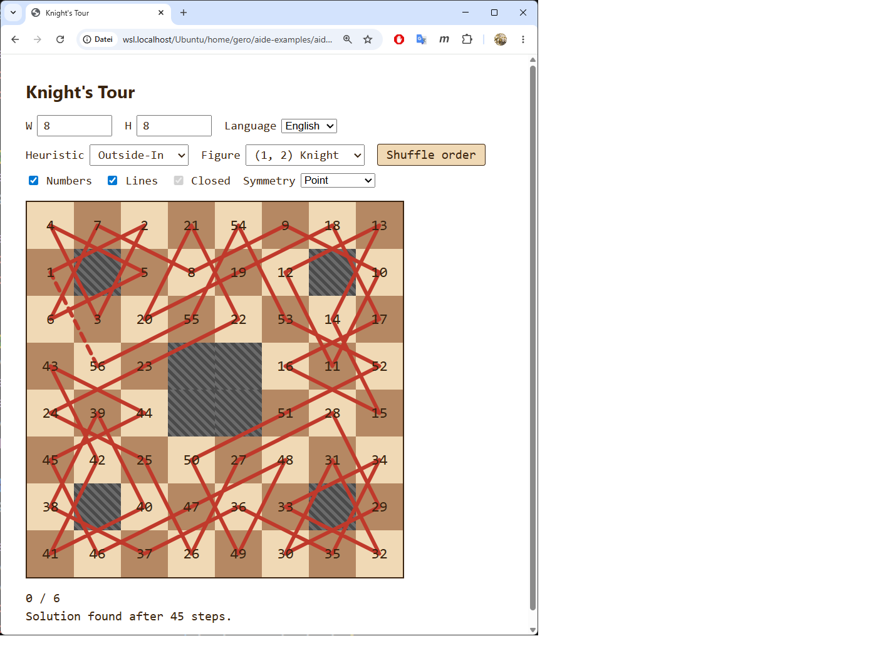
Test-Setup: 8×8, Knight, Outside-In, Point-Symmetrie, 8 blockierte Felder, gemischte Move-Order, Start (0,6). Die 8 Blöcke bilden ein point-symmetrisches "Maskenmuster" (4 Paare). Lösung erscheint in 45 Schritten — saubere geschlossene Tour über 56 Felder, gestrichelte Schließungslinie sichtbar (oben links).
Bestätigt funktionierende Features:
block=... (Phase-7.5-Replay-Mechanismus trägt)tests/test.html mit 12 Cases läuft komplett grün (nach Bugfix)9edead7 — Phase 8: blockable cells via right-click / long-press / Shift+Enter
16523e8 — Phase 8 follow-up: replace hanging Warnsdorff-block test with confirmed user pattern
a9e5df5 — Phase 8 follow-up: faster start cell for the block-pattern test
Bevor Phase 9 implementierbar wurde, fielen zwei architektonische Vorklärungen an, die der User direkt angestoßen hat. Beide gehören in die Phase-12-Lehrunterlage, weil sie methodisch ebenso wertvoll sind wie die NFR-Diskussion am Ende von Phase 7.
Das System hatte bis dahin den Mischzustand: I18n und AppState als Singletons (static getInstance()), Solver als Instance. Der User-Vorschlag war: alles als Instance, am Entry-Point genau einmal instanziiert, per Konvention mit the… benannt (const theI18n = new I18n()).
Antwort nach Abwägung: fast keine echten Nachteile. Singleton ist globaler State in Klassen-Hülle und unterläuft T_CONTRACT.md-Sektion 1 ("kein globaler State außerhalb von Klassen"). DI macht Abhängigkeiten in jeder Konstruktor-Signatur sichtbar; Tests instanziieren frisch; Embedding mehrerer Boards funktioniert ohne Refactor.
Konsequenzen umgesetzt:
T_CONTRACT.md Sektion 1 umformuliert: static getInstance() ist nicht zugelassen.T_CONTRACT.md Sektion 9 "Aus dem globalen Coding-Vertrag mitgeerbt" — listet die CLAUDE.md-Prinzipien, die im Projekt operativ wirken aber aus den projektlokalen Dokumenten allein nicht direkt sichtbar sind (Modulkapselung, Lokalität, Single-Point-of-Access, no-setTimeout-Hack, stille-Auslassung-verboten, Detektor-vor-Fix, only-living-code, MD-Beschreibungssatz). User-Begründung: "ein naiver Leser, der nur Knight's Tour ansieht" muss diese Prinzipien nicht aus Indizien rekonstruieren.I18n und AppState haben kein static getInstance mehr. Konstruktoren von AppState, Board, UI nehmen ihre Abhängigkeiten explizit. app.js ist der einzige Ort, der new aufruft.Commit: 7e485e1 (T_CONTRACT) + 3228758 (Code-Refactor) + manuell ~/.claude/CLAUDE.md-Update (kein Git-Repo).
solver.js lag bei 293 Zeilen, app.js bei 283 — Verletzung der T-Contract-Modulgröße. Statt die Regel aufzuweichen wurden zwei klare Schnitte gezogen:
js/sym.js — Sym-Klasse mit statischen Symmetrie-Helfern (isValid, orbit, transform, expand, SIZES). Wird von Solver und (für Orbit-erweiterte Blocks) von app.js benutzt.js/driver.js — SearchDriver-Klasse, der Chunked-Async-Executor (50 ms Chunks, Token-Cancellation, Live-Status-Updates). app.js instanziiert ihn als theDriver und ruft start(solver) / stop() / invalidate().Ergebnis (Stand nach Phase 9):
| Datei | Zeilen |
|---|---|
js/app.js |
228 |
js/board.js |
233 |
js/driver.js |
82 |
js/figures.js |
21 |
js/i18n.js |
105 |
js/renderer.js |
69 |
js/solver.js |
238 |
js/state.js |
230 |
js/sym.js |
60 |
js/ui.js |
187 |
Alle unter 250. T-Contract-konform.
knight.md Z. 20 hatte vorgeschlagen: "alle 5 Sekunden per confirm() fragen, ob weitergesucht werden soll". Der User hat das mid-Phase neu sortiert mit der Begründung, dass er zwei sehr unterschiedliche Use-Cases hat:
Diese zwei Bedürfnisse werden mit einem einzigen Mechanismus bedient: user-konfiguriertes Zeit-Budget pro Suche. Default 10 s. User setzt 300 oder 2 je nach Stimmung. Das knight.md-5-Sekunden-Confirm-Pattern ist damit obsolet.
Q: Wie soll das Zeit-Budget gesetzt werden? A: Number-Input "Time budget (s)" in Reihe 1, frei zwischen ≥1, persistiert in URL + localStorage.
Q: Default-Wert? A: 10 Sekunden — Mitte zwischen den Use-Cases, deckt fast alle "normalen" Lösungen ab.
Q: Manueller Stop-Button zusätzlich? A: Ja, sichtbar während laufender Suche, verschwindet bei Ende.
Q (vom User vor den Mikrofragen): Re-Klick = "nächste Lösung" — wie soll das genau gehen? A: Solver-Instanz lebt zwischen Klicks; bei gleichem Startfeld + gleichen Settings setzt die zweite .search()-Call die Suche von der vorherigen gefundenen Tour fort (intern: ein Backtrack-Schritt, dann normales Weitermachen). Schritt-Counter wächst über alle Klicks hinweg.
1. Solver als echte Instanz mit chunked Execution.
Solver.search(maxMs) läuft die iterative DFS für höchstens maxMs Millisekunden, gibt einen Discriminated-Union-Result zurück:
{ kind: 'found', path, steps, closed } — Tour gefunden
{ kind: 'exhausted', steps } — Suchraum leer
{ kind: 'timeout', steps } — Chunk-Zeit erschöpft, resumable
Time-Check alle 1000 inneren Iterationen (CHECK_EVERY) — Date.now()-Overhead ist damit unter 0.1 %.
Solver.solve(...) als statischer Wrapper für Tests (übergibt Infinity als maxMs).
foundLast-Flag: nach kind: 'found' macht der nächste .search()-Call genau einen Backtrack-Schritt, dann läuft die Schleife normal weiter — die nächste Tour erscheint mit anderer Geometrie. steps akkumuliert.
2. SearchDriver — der chunked Loop in app.js entfernt.
new SearchDriver(theState, theI18n, theUI, theRenderer).start(solver) schedult setTimeout(0)-getaktete 50-ms-Chunks. Pro Chunk:
stop() / Settings-Change inkrementiert das interne token; veraltete Chunks aussteigen ohne UI zu mutieren.solver.search(min(50ms, remaining)) aufrufen.found / exhausted: Status setzen + ggf. Tour rendern + Stop-Button verstecken.timeout: Status auf "Searching… N Schritte, T.T s" aktualisieren und nächsten Chunk schedulen.elapsed >= theState.timeBudget * 1000, Abort mit "Aborted after T s, N steps".3. AppState.timeBudget (Sekunden, default 10), persistiert wie alle anderen Felder.
4. UI: time-budget-input (Number-Input, Reihe 1), stop-btn (rotes Button, hidden-Attribut steuert Sichtbarkeit). Sprach-Switcher ist davor in Reihe 1.
5. Solver-Lifecycle in app.js. Ein einziger currentSolver + currentSolverKey (Fingerprint aus W, H, col, row, heuristic, figure, mix-order, sym, closed, blocked). Klick mit gleichem Key → Solver-Reuse → .search() continued. Settings-Change ruft dropSolver(), der den Driver invalidiert und beide auf null setzt → nächster Klick erzeugt frischen Solver.
Neue Strings: timeBudgetLabel, stopBtn, searching(n, sec), aborted(sec, n), stopped(n).
Solver.solve(8, 8, ...) synchron: 64-Zell-Tour in 63 Schritten ✓.search(Infinity) zweimal mit Start (3,3): zwei verschiedene Touren, Schritt-Counter wächst 63 → 73 ✓.search(20ms) mit pathologischem (4,4)-Block: timeout nach ~8000 Schritten ✓Beide Use-Cases vom User bestätigt:
timeBudget = 2, Klick-durch-Startfelder. Browser bleibt während der Suche bedienbar.timeBudget, Live-Status zeigt Fortschritt, Stop-Button jederzeit verfügbar, keine Browser-Protector-Pop-ups.(Kein Screenshot diesmal — die Phase wirkt sich vor allem im Verhalten aus, nicht in einem charakteristischen Bild.)
7e485e1 — T_CONTRACT: DI over Singleton + new section 9 'inherited globals'
3228758 — DI refactor: replace Singleton getInstance with constructor-injected 'theX' convention
0b994e2 — Phase 9: chunked async search with time budget, stop button, re-click-continue
Plus ~/.claude/CLAUDE.md-Sektion "Dependency Injection bevorzugt vor Singleton-Pattern" (außerhalb dieses Repos, ungetrackt).
Q: Wie sollen die Sensitivitäts-Werte visuell dargestellt werden?
A: Heatmap + Zahl. Hintergrundfarbe pro Feld nach log-Skala (grün=schnell, rot=langsam, grau=keine Lösung im Budget); kompakte Schritt-Anzahl als Label im Feld (63, 12k, 1.2M).
Q: Was passiert beim Klick auf ein Feld nach einer Sensitivitäts-Anzeige? A: Sofort reguläre Tour starten. Heatmap verschwindet, normale Tour wird gerendert.
Q: Sensitivitäts-Lauf bei aktiver Symmetrie oder Closed-Modus? A: Mitnehmen wie aktuelle Settings. Jeder Cell-Lauf nutzt die aktuell konfigurierte Heuristik + Symmetrie + Closed + Blocks.
Q (während Implementierung): Gilt das Zeit-Budget pro Einzelsuche?
A: Ja. state.timeBudget Sekunden pro Zelle. Bei budget=2 und 64 Zellen also Worst Case ~2 min Gesamtdauer; Zellen, die schnell lösen, beenden früher und der Scan rückt sofort weiter — typisch viel schneller als Worst Case.
SensitivityScan in js/driver.js — neue Klasse neben SearchDriver. run() ist async: iteriert über alle nicht-blockierten Zellen, baut pro Zelle einen frischen Solver mit aktuellen Settings, läuft ihn in 50-ms-Chunks bis 'found'/'exhausted' oder bis state.timeBudget erreicht. Cooperative yields (await new Promise(r => setTimeout(r, 0))) sowohl zwischen Solver-Chunks als auch zwischen Zellen — Browser bleibt responsiv, Stop-Button wirkt sofort. Token-basierte Cancellation wie SearchDriver.js/renderer.js — setSensitivityCell(col, row, value, minLog, maxLog) setzt Background-Color inline + appended ein .num.sens-Label. recolorSensitivity(results, minLog, maxLog) repaintet alle Zellen, damit der log-Ramp normalisiert bleibt während neue Werte hinzukommen. _heatColor ist HSL-basiert (Hue 120 grün → 0 rot). _compactStepCount formatiert 1234 → 1234, 12345 → 12k, 1234567 → 1.2M, null → —.app.js ebenfalls über 250 → Extraktion als SensitivityScan in driver.js. Beide Module landen wieder im T-Contract-Rahmen.#search-controls neben Stop, hidden per Default. SearchDriver zeigt ihn nach 'found'; SensitivityScan zeigt ihn nach Scan-Ende; onCellClick/rebuildBoard verstecken ihn. Stop-Handler ist unified: wenn ein Scan läuft → theSensitivity.cancel(); sonst → theDriver.stop().sensitivityBtn, sensitivityRunning(i, n), sensitivityDone(n)) für en und de.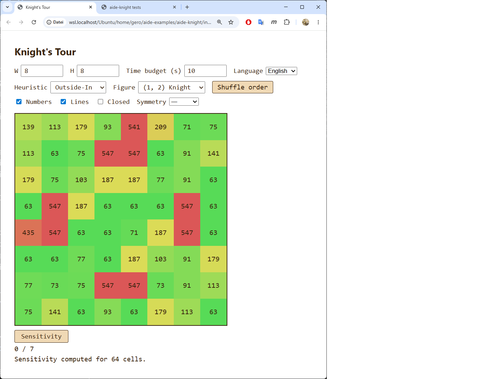
Test-Konfiguration: 8×8 Knight, Heuristik = Outside-In, kein Symmetry/Closed/Block, time budget = 10 s. Sensitivity-Scan komplettiert alle 64 Felder; Status: "Sensitivity computed for 64 cells."
Auffällige Datenstruktur: die Outside-In-Heuristik produziert einen sehr ungleichen Schwierigkeitsteppich:
63 Schritten (Outside-In findet hier sauber durch, kein Backtracking)547 Schritten — ungefähr 8.7-mal mehr als die einfachen FälleVergleich mit Warnsdorff (didaktischer Bonus für Phase 12): Warnsdorff produziert auf 8×8 Knight eine fast einheitliche Landschaft (alle Felder ≈ 63 Schritte). Outside-In zeigt also einen erheblich heterogenen Charakter — manche Startfelder sind für Outside-In leicht, andere kosten 8-9× mehr Arbeit. Die Sensitivitäts-Visualisierung macht diesen Unterschied zwischen Heuristiken auf einen Blick erfassbar.
Bestätigt funktionierende Features:
e7ebf10 — Phase 10: per-cell sensitivity scan with live heatmap
Master-Plan: "Falls Phase 1–10 alles in einer Datei zusammenhäuft: aufteilen in board.js, solver.js, ui.js, app.js …". Das Phase-7.5-DI-Retrofit hat diese Arbeit bereits vorweggenommen — die Codebase besteht heute aus 10 OO-Modulen, alle unter 250 Zeilen, mit theX-DI-Konvention statt Singletons. Phase 11 wird damit zum Validierungs- und Politur-Pass, nicht zu einem strukturellen Eingriff.
Q: Wie tief soll der Stresstest werden? A: Alle drei Heuristiken + Closed, jeweils 60 s Budget. Liefert eine Vergleichstabelle für das Protokoll.
Q: Wo soll der Hygiene-Pass schwerpunktmäßig hinschauen? A: UI/UX-Polish + Konsistenz-Audit. Test-Erweiterung und Performance-Profiling explizit ausgelassen.
Node-Standalone-Lauf gegen die produktive Solver-Implementierung, Start (0,0) auf 100×200 Knight, Budget 60 s pro Lauf:
| Konfiguration | Ergebnis | Schritte | Zeit |
|---|---|---|---|
| Warnsdorff (open) | ✓ found | 19 999 | 86 ms |
| Outside-In (open) | timeout | 286 M | 60 s |
| Brute Force (open) | timeout | 491 M | 60 s |
| Warnsdorff CLOSED | timeout | 298 M | 60 s |
Interpretation:
steps = total - 1).a224ff0)Drei kleine CSS-Verbesserungen:
--color-accent (#c0392b, das Rot der Tour-Linie + Stop-Button + Cell-Focus-Outline) + --color-accent-shadow (#8a2618) in :root. Vorher waren diese Werte an drei Stellen hardcoded — jetzt eine Quelle.#search-controls button. Stop- und Sensitivity-Button hatten bisher den Default-Browser-Focus-Ring (statt unserer einheitlichen outline: 2px solid var(--color-ink)-Linie). Kleine a11y-Konsistenz-Lücke geschlossen.#status2 { margin-top: 0.3rem; }-Regel entfernt. Wurde vom darüberliegenden geteilten Rule mit identischem Wert überschrieben — dead style.Stichproben über die ganze Codebase:
js/*.js-Datei beginnt mit // <Klasse> — <einzeiliger Zweck>, gefolgt von einem leeren Comment-Block und mehrzeiliger Erklärung. Einheitlich, keine Ausreißer.console.*-Calls: Keine. (Nur in tests/tests.js, dort als Test-Runner-Ausgabe legitim.)TODO/FIXME/XXX: Keine offenen Markierungen.Solution found after N steps.), laufende mit Auslassung oder ohne Punkt (Searching… N steps, T.T s, Sensitivity: cell K/N). Konsistent in en und de.grep -E "static getInstance|_instance" js/*.js liefert nichts. Phase-7.5-Refactor vollständig.| Sektion | Status |
|---|---|
| 1. Architektur — OO, multi-file, <250, pure functions, SSoT, DI | ✓ alle 10 Module konform, keine getInstance, klare Schnittstellen |
| 2. Plattform — file:// ohne Server/Node, modern Chromium/FF/Safari | ✓ keine Build-Abhängigkeiten, klassische <script>-Tags |
| 3. Replay-Testbarkeit — URL-Hash, headless-CI-tauglich, Pure-Function-Tests | ✓ Phase 7.5 B2 + tests/test.html |
| 4. Responsivität — Resize/Reflow, Touch-Substitute, Hover, lange Ops mit Cancel | ✓ Phase 3 + Phase 8 Long-Press + Phase 9 Stop+Budget |
| 5. i18n als Architektur, Switcher, en+de | ✓ Phase 7.5 B3 |
| 6. a11y — Keyboard, ARIA, aria-live, Focus, kein color-only | ✓ Phase 7.5 B4 + Phase 11 search-controls focus |
| 7. Performance & Robustheit — Soft-Limit, defensive Parsing, no silent failure | ✓ time budget = soft limit; localStorage try/catch; Tests greifen, nichts wird leise ignoriert |
| 8. Code-Qualität — Test-Skelett, MD-Beschreibungssätze, <250 | ✓ tests/test.html mit 12 Cases; alle MDs starten mit Beschreibungssatz |
| 9. Aus dem globalen CLAUDE.md mitgeerbt — Modulkapselung, Lokalität, SPoA, no-setTimeout-Workaround, no-silent-failure, Detektor-vor-Fix, only-living-code, MD-Beschreibungssatz | ✓ — speziell der "Detektor-vor-Fix" wurde in Phase 8 (hängender Test) praktisch durchexerziert |
Resultat: Die Codebase ist Code-Review-tauglich nach Master-Plan-Kriterium.
a224ff0 — Phase 11 polish: CSS accent variables + focus-ring on search-controls + remove redundant rule
Plus diese PROTOKOLL.md-Ergänzung.
Damit ist Phase 11 abgeschlossen. Im Master-Plan bleibt nur noch Phase 12 — die co-redaktionale Destillation einer Lehrunterlage aus diesem Protokoll, gemeinsam mit dem User.